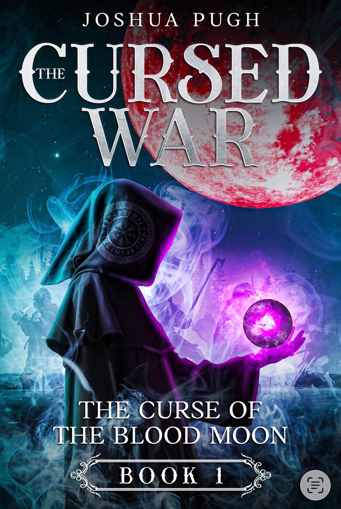

Book One of The Curse of the Blood Moon
The CursedWar
A dying king’s promise. A continent breaking beneath old hatred. A sealed letter that should never have survived the road.

The premise
Some wars do not end.
Seven years after King Eldric died in his arms, Garrett still carries the weight of the promise he made. Now Rainwynn marches against Kentmore, old loyalties are failing, and something beneath the conflict has begun to stir.
The Cursed War is the first book in The Curse of the Blood Moon, an epic fantasy series about memory, vengeance, loyalty, and the dangerous stories nations tell themselves.
From the Embervoid
“You carry a burden. It poisons your path. Corrupts your thoughts. Even now, it claws at your sleep.”— From Chapter Three